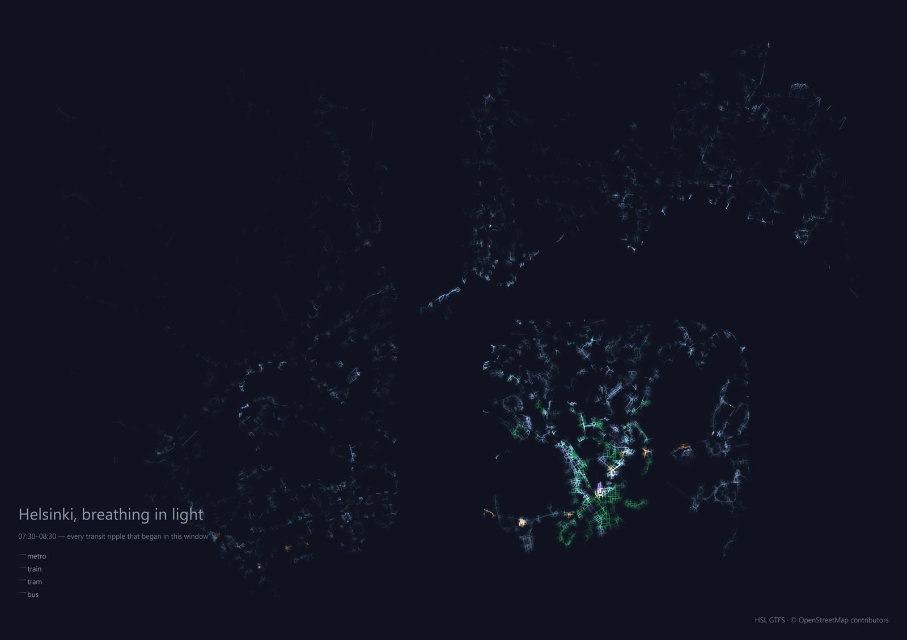
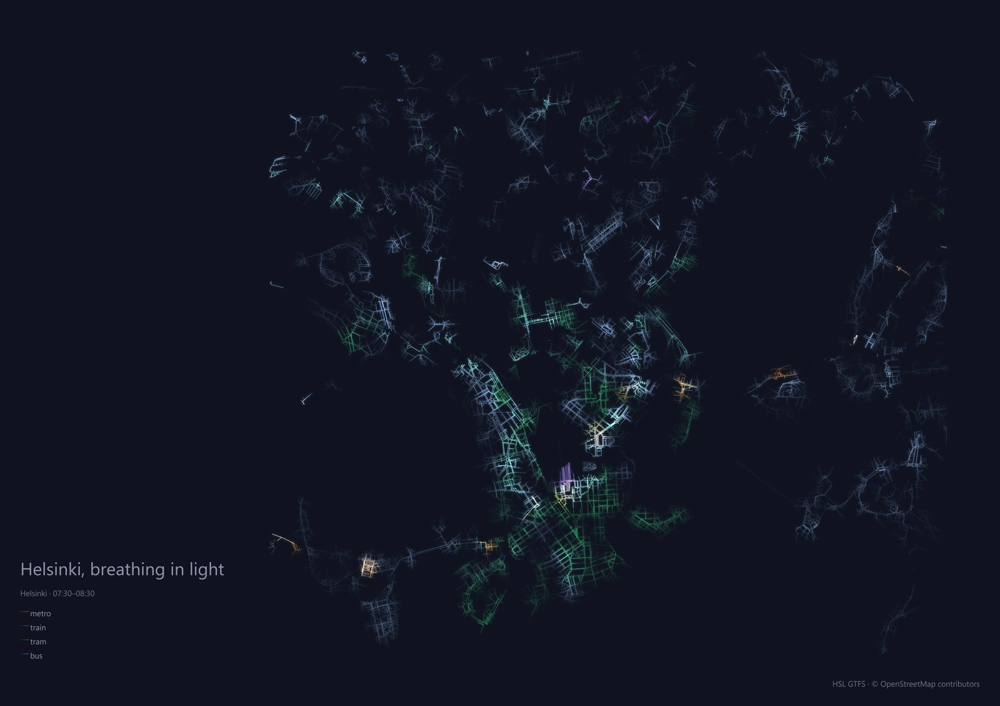
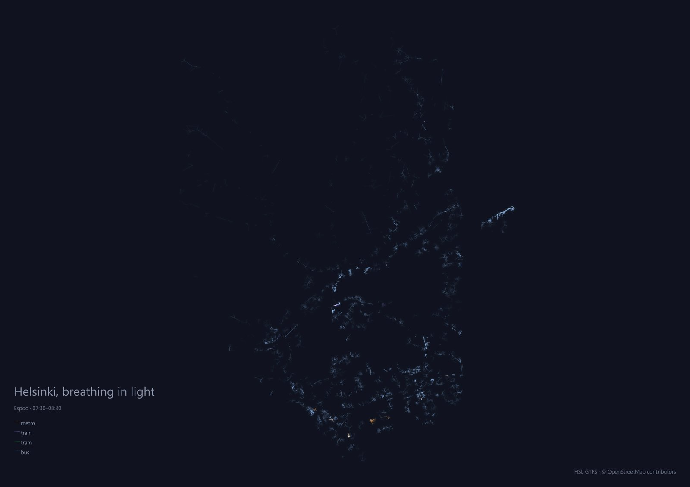
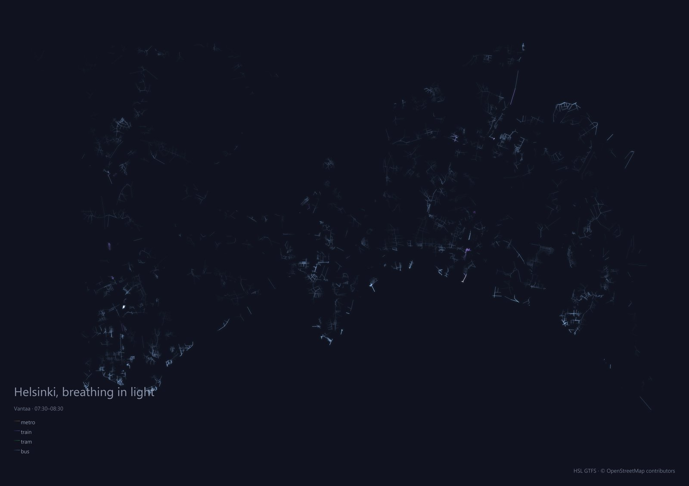
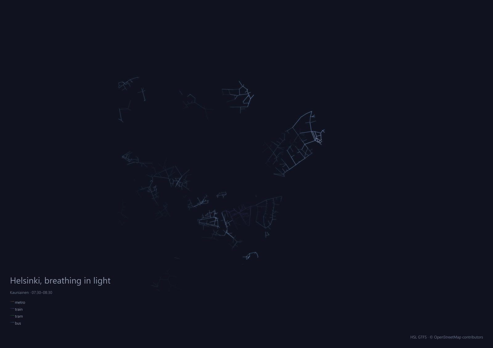

Long exposures
Each plate accumulates every transit ripple that began in one hour of the Helsinki morning — brightness is how often light passed over a street; color is who brought it (metro, train, tram, bus). Rendered from the same data the live map plays.




